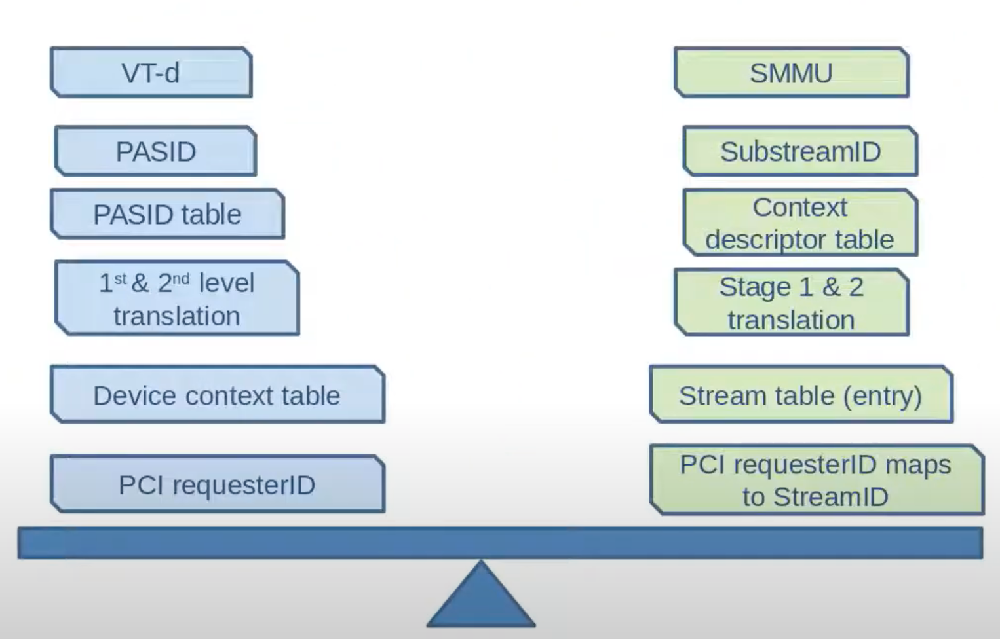

异构内存管理SVA
[toc]
什么是 SVA ？
SVA (Shared Virtual Addressing) 指设备和处理器使用相同的虚拟地址空间的能力。 SVA 也被称为 SVM (Shared Virtual Memory)，但社区倾向用 SVA，避免与 Secure Virtual Machine 混淆。
SVA好处
-
降低 CPU 与高性能外设（GPU/NPU/SmartNIC/FPGA/ASIC/Accelerator等）间共享数据的开销
-
device 和 cpu 共用相同的内存指针，降低软件复杂度
-
设备 DMA 时具备了和 cpu 类似的缺页处理，不再需要 pin DMA page
SVA 能力需要三个方面特性的支持：
- 每个设备内支持多份地址空间，比如 PASID
- IO page fault 的支持，比如 PCIe 的 PRI
- MMU 与 IOMMU 页表的兼容
异构系统不兼容问题
C2K问题就在与一个使用了PPC的MMU，一个使用了ARM的SMMU。也表格格式不兼容。
ARM SMMU 采用的是正向页表，为每个进程组织一份页表
PPC MMU 采用的是反向页表，为整个系统物理内存组织页表
SVA地址翻译时，MMU和SMMU使用的都是进程的page table。但SMMU 的输入是64bit EA，MMU 的输入是64bit EA经过SLB转换后的78bit VA。
SVA 在各个平台上的实现不一样，比如 Intel 和 ARM 上各自有一套术语，但大体上含义一样。

为了实现共用一套页表，索引机制也得变，device 使用的是BDF编码的streamID，而一个BDF设备可以被多个进程使用，CPU是以process为单位的，两者颗粒度不同。因此需要使用PASID 功能，让设备DMA也以process来索引。
所以插入一个，记录一下什么是PASID。
PASID
什么是 PASID？这个是 PCIe spec 引入的概念。 PASID TLP prefix 中包含 20 bit 位宽的 PASID value，用来作为使用者 process 的标识。它与 Requeseter ID (BDF) 结合起来，可以作为一个地址空间的标识。一个 Requester ID 内的 PASID 是唯一的；换句话说，不同的 Requester ID 下，可以使用数字相同的 PASID，两者的地址空间不冲突。携带 PASID prefix 后，每个进程可以在拥有独立的虚拟地址空间的情况下，共用同一个 EP 设备。 PASID 与 ATS、PRI 功能正交，没有依赖关系。 PASID TLP prefix 的格式：

Intel IOMMU（VT-d）方案

Nvidia UVA